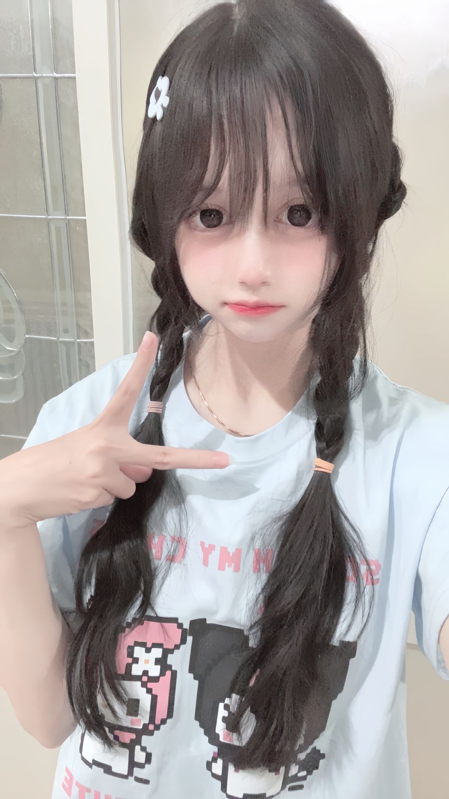

alooo sayanggkuu akuu tauu kamuu sering capee karena kegiatanmu ya sayanggkuu ini akuu apresiasi kegiatanmuu buatin kamuu website sayangkuuu maaf ya kalau kurang bagus lain waktu buat yang lebi bagus sayanggg
Sayang akuu sayang beruntung sekali bertemu dengan gadis seperti kamuu cantik, lucu, gemesin, baik, selalu ngikut yang aku bilang. aku sayangg bangettt sama kamuu pokoknya kamuu jangan tinggalin akuu yaa tayanggg akuu soalnya ndaa bisa kalau ndaa ada kamuu sayangkuu pokoknya kitaa selalu bersama dan akuu bakalan semangatin kamuu gimaana pun keadaannya.

akuu dan kamuu selama 9 bulan ngelewatin rintangan yang banyak bangett, kita sama2 berjuang buat hubungan terus langgeng sayangggg. akuu bener2 ndaa nyangka kalau kita yang ndaa kenal sampai jadi se mesra ini walau kadang ada pertengkaran kita perbaiki pokoknyaa. cantikkuu akuu janji bakalan ngewujudin wish kita yang banyaaa pokoknyaa ndaa boleh pergi semuaa wlee nanti mauu nikah teyuss jalan2 ke luar negri I Loveee uuu sayanggkuu cantikuu duniakuu semestakuu